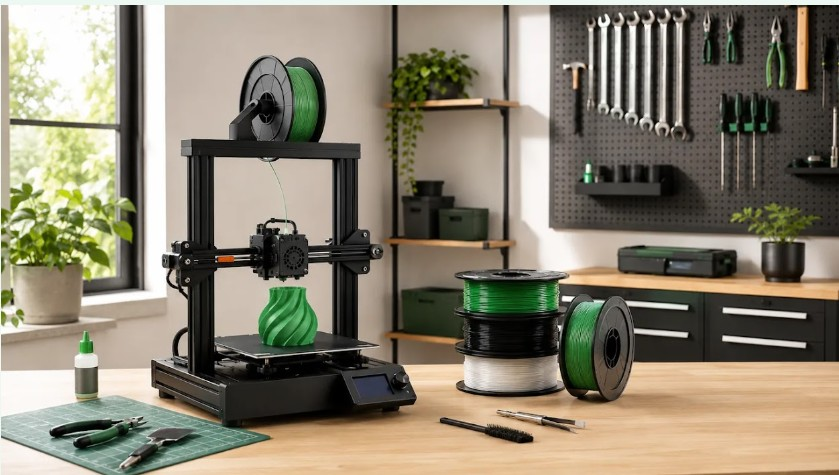
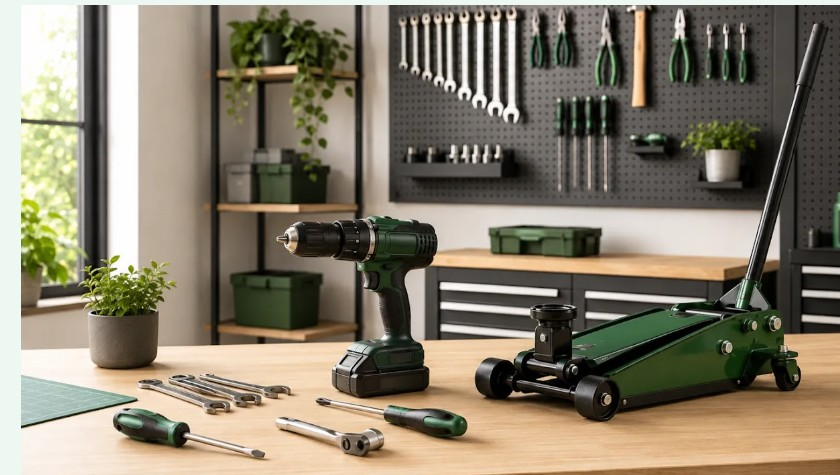
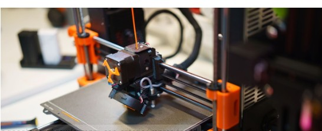
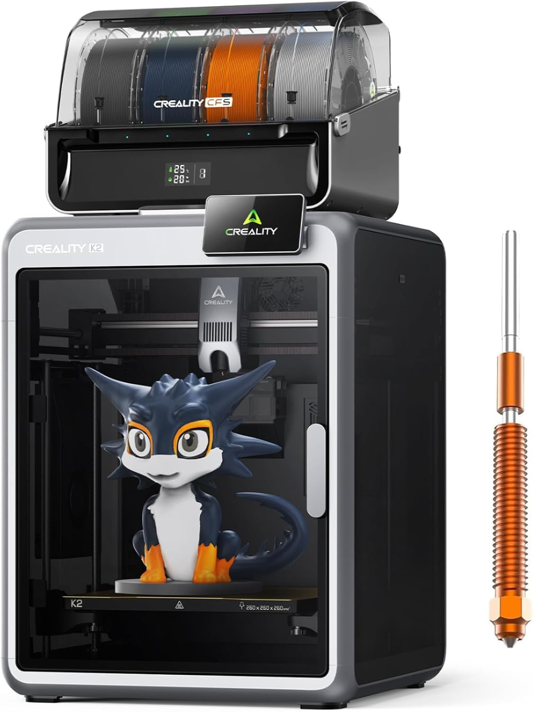
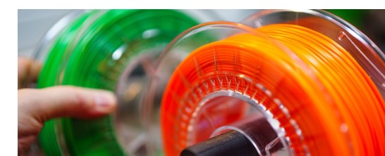
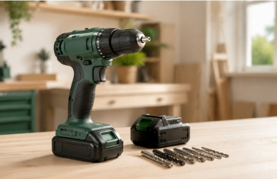
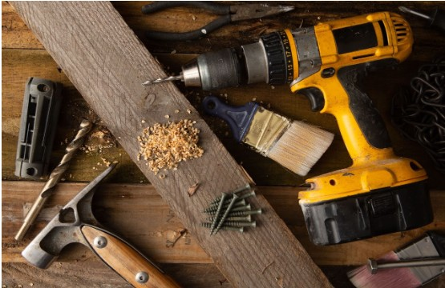
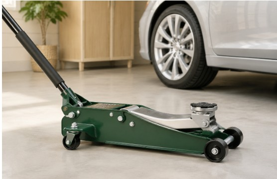

Impresión 3D
Impresoras, filamentos y accesorios
Aprende a comparar impresoras 3D FDM, materiales y accesorios según el tipo de proyecto, compatibilidad, facilidad de uso y necesidades de impresión.
Explorar Impresión 3D →En Compra con Criterio analizamos productos de herramientas e impresión 3D para ayudarte a elegir según sus características, prestaciones, compatibilidad y tipo de uso. Comparamos opciones disponibles en Amazon.es y explicamos qué diferencias pueden influir realmente en la decisión de compra, evitando basarnos únicamente en el precio o en las cifras más llamativas de cada ficha técnica.
Encontrarás comparativas, guías de compra y análisis centrados en aspectos como capacidad, materiales, rendimiento, facilidad de uso, equipamiento y limitaciones. Puedes empezar explorando nuestras secciones de Herramientas e Impresión 3D, donde agrupamos los contenidos por tipo de producto y necesidad.
Organizamos el contenido por temática para que puedas encontrar comparativas, guías y explicaciones relacionadas con el producto que estás buscando.

Impresión 3D
Aprende a comparar impresoras 3D FDM, materiales y accesorios según el tipo de proyecto, compatibilidad, facilidad de uso y necesidades de impresión.
Explorar Impresión 3D →
Herramientas
Comparativas y guías sobre potencia, capacidad, compatibilidad, equipamiento y otros factores que conviene revisar antes de elegir una herramienta.
Explorar Herramientas →Accede directamente a algunos de los contenidos principales publicados actualmente en Compra con Criterio.
Guía

Volumen, estructura, materiales compatibles, cámara cerrada y funciones que conviene revisar antes de elegir.
Ver guía →Comparativa

Seis modelos FDM comparados según volumen, materiales, estructura, automatización y tipo de usuario.
Ver comparativa →Guía

Diferencias entre PLA, PETG, ABS, ASA, TPU y otros materiales utilizados habitualmente en impresión FDM.
Ver filamentos →Guía

Cómo valorar par, percusión, tipo de motor, plataforma de baterías y contenido del kit.
Ver guía →Comparativa

Opciones orientadas a distintos niveles de uso, desde bricolaje doméstico hasta trabajos más frecuentes.
Ver comparativa →Comparativa

Comparación centrada en capacidad, altura mínima, elevación y adecuación para distintos tipos de vehículo.
Ver comparativa →Buscamos que cada guía explique qué características cambian realmente la decisión y en qué situaciones puede tener sentido elegir una opción u otra.
Priorizamos especificaciones que ayudan a distinguir productos según su función y el tipo de usuario.
Indicamos puntos fuertes y aspectos que pueden hacer que un producto sea menos adecuado para determinados usos.
Los precios, versiones y disponibilidad pueden cambiar, por lo que evitamos presentar esas condiciones como permanentes.